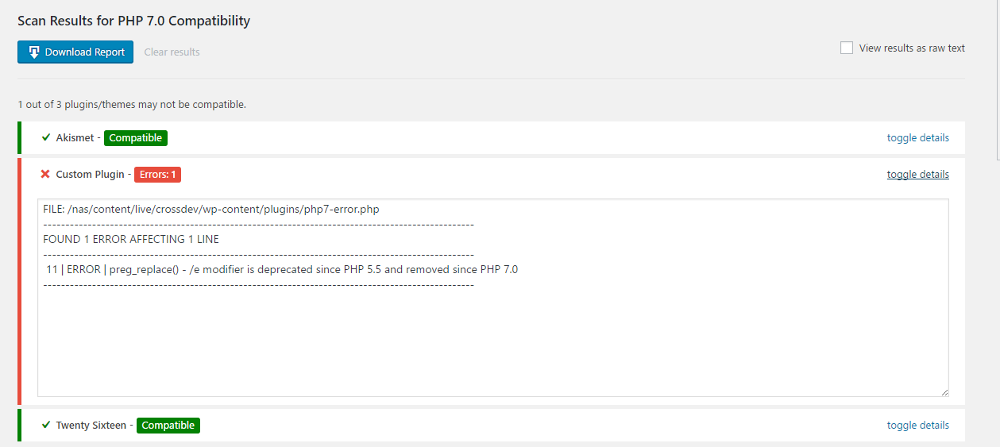
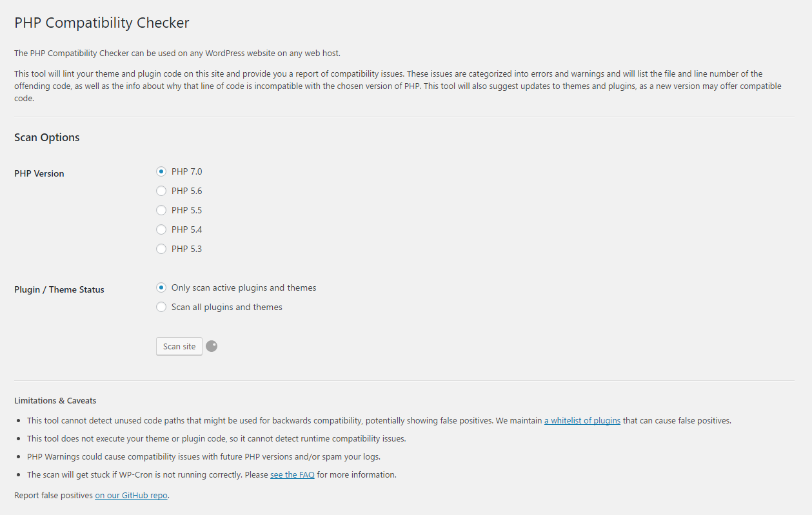
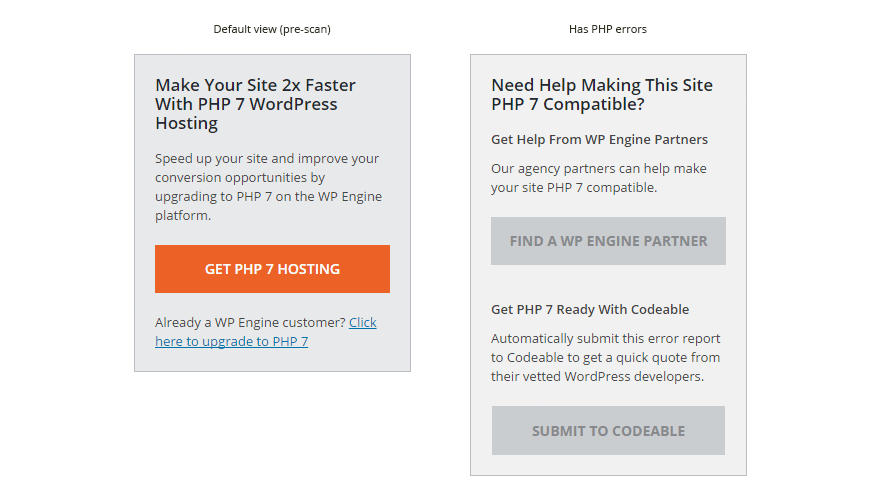
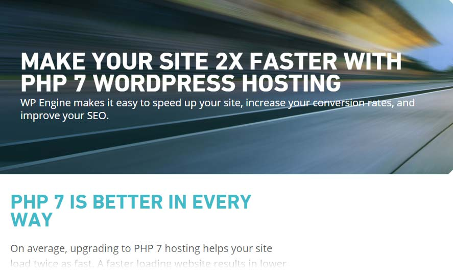
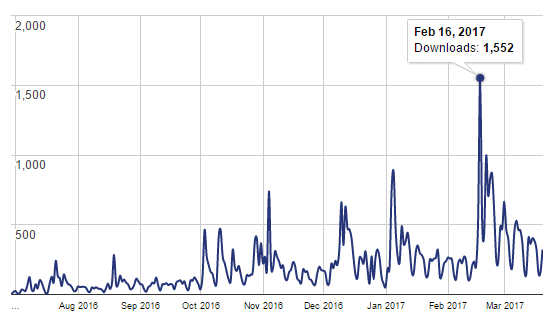

<!DOCTYPE html><html><head><meta charset=UTF-8 /><meta content="IE=edge,chrome=1" http-equiv=X-UA-Compatible /><meta content="width=device-width" name=viewport /><script>var host = "hellojason.net";
if ((host == window.location.host) && (window.location.protocol != "https:"))
  window.location.protocol = "https";</script><meta content="index,follow" name=robots /><link href="../../apple-touch-icon.png?v=Gvm449pRYq" rel=apple-touch-icon sizes=180x180 /><link href="../../favicon-32x32.png?v=Gvm449pRYq" rel=icon sizes=32x32 type="image/png"/><link href="../../favicon-16x16.png?v=Gvm449pRYq" rel=icon sizes=16x16 type="image/png"/><link href="/site.webmanifest?v=Gvm449pRYq" rel=manifest /><link color="#a432f4" href="../../safari-pinned-tab.svg?v=Gvm449pRYq" rel=mask-icon /><link href="../../favicon.ico?v=Gvm449pRYq" rel="shortcut icon"/><meta content="#a432f4" name=msapplication-TileColor /><meta content="#ffffff" name=theme-color /> <title>Hello Jason / PHP Compatibility Checker Plugin</title><meta content="Design and development portfolio of Jason Cross" name=description /><link href="../../assets/stylesheets/site-64105e90.css" rel=stylesheet /><link href="https://hellojason.net//projects/wpe-php-compatibility-checker/" rel=canonical /><script>(function(i,s,o,g,r,a,m){i['GoogleAnalyticsObject']=r;i[r]=i[r]||function(){
(i[r].q=i[r].q||[]).push(arguments)},i[r].l=1*new Date();a=s.createElement(o),
m=s.getElementsByTagName(o)[0];a.async=1;a.src=g;m.parentNode.insertBefore(a,m)
})(window,document,'script','//www.google-analytics.com/analytics.js','ga');

ga('create', 'UA-48926813-1', 'auto');
ga('send', 'pageview');
ga('set', 'anonymizeIp', true);</script></head><body class="projects projects_wpe-php-compatibility-checker projects_wpe-php-compatibility-checker_index"></body><header class=banner role=banner><div id=primary-navigation role=navigation><div class=navbar-header><a class=logo href="/" title="Hello Jason Portfolio"><svg id=hellojason-logo xmlns="http://www.w3.org/2000/svg" width="0.56in" height="0.56in" viewBox="0 0 40.6 40.6"><defs><style>.cls-1{fill:#fbac2d;}</style></defs><title>hello-jason-logo</title><path class=cls-1 d="M9.3,13.1a4.11,4.11,0,0,1,2.8-.7H29.9a4.42,4.42,0,0,1,2.9.7,3.39,3.39,0,0,1,.8,2.5v0.5H28.4A1.43,1.43,0,0,0,27,17.5v0.9q3.75,0,4.8.9c0.7,0.6.9,2.9,0.9,2.9a28.1,28.1,0,0,1,.1,2.9V29a1.43,1.43,0,0,1-1.4,1.4h-8A1.43,1.43,0,0,1,22,29V28.1c0-1.9.2-3.1,0.7-3.6a3.37,3.37,0,0,1,1.7-.6,1.42,1.42,0,0,0,1.4-1.2,1.33,1.33,0,0,0-1.4-1.1H16.9A1.43,1.43,0,0,0,15.5,23v0.7c1.6,0,2.7.2,3.2,0.7a5.14,5.14,0,0,1,.6,2.3,23.48,23.48,0,0,1,.1,2.6A1.33,1.33,0,0,1,18,30.4H11A1.43,1.43,0,0,1,9.6,29V23.5c0-2.2.3-3.5,0.8-4.1a4.15,4.15,0,0,1,1.8-.7,15.26,15.26,0,0,1,1.8-.1,1.23,1.23,0,0,0,.4-1.2A1.33,1.33,0,0,0,13,16.2H8.5V15.5a2.92,2.92,0,0,1,.8-2.4" transform="translate(-0.7 -0.7)"/><path class=cls-1 d="M21,3.4A17.6,17.6,0,1,1,3.4,21,17.63,17.63,0,0,1,21,3.4m0-2.7A20.3,20.3,0,1,0,41.3,21,20.31,20.31,0,0,0,21,.7h0Z" transform="translate(-0.7 -0.7)"/></svg><span class=tagline>Hello, I'm Jason.</span></a></div><div id=primary-container><ul class=nav><li class=nav-item-blog><a href='/'>Blog</a></li><li class=nav-item-projects><a href='/projects/'>Projects</a></li><li class=nav-item-about><a href='/about/'>About</a></li></ul></div></div><div class=container><h1 class=title>PHP Compatibility Checker Plugin</h1></div><svg class=icon-arrow-downright xmlns="http://www.w3.org/2000/svg" width="8.4" height="8.5" viewBox="0 0 8.4 8.5"><title>icon-arrow-downright</title><path d="M2.3,8.5,0,6.1H4.5L0,1.6,1.6,0,6.1,4.5V0L8.4,2.3V8.5Z"/></svg></header></html><main class=container role=main><section id=project-single><aside><dl><dt>Project</dt><dd>PHP Compatibility Checker Plugin</dd><dt>Year</dt><dd>2017</dd><dt>Software</dt><dd>WordPress Plugin</dd><dt>Roles</dt><dd>UX, CRO</dd></dl><hr></hr><h3>Links</h3><a href="https://wordpress.org/plugins-wp/php-compatibility-checker/">WP Plugin</a><a href="https://github.com/wpengine/phpcompat">GitHub Repo</a></aside><main role=main><h2>Summary</h2><p>I updated WP Engine's <a href="https://wordpress.org/plugins-wp/php-compatibility-checker/">PHP Compatibility Checker plugin</a>, for WordPress, as part of a marketing effort to educate users about the benefits of PHP 7 when compared to previous versions. This campaign would also announce that WP Engine is compatible with sites built for PHP 7, and efforts should seek to increase conversions (signups) where possible.</p><h2>Strategy</h2><p>Working closely with our web strategist <a href="https://twitter.com/davidvmc">David Vogelpohl</a>, my deliverables would include the following:</p><ul><li>Rethink the UI so that viewing PHP errors is more intuitive and requires less scrolling</li><li>Include links for non-technical users who need assistance from developers to fix PHP errors or to test their site in PHP 7 enabled hosting environments</li><li>A <a href="https://wpengine.com/try/php7-hosting/" rel=nofollow>landing page</a> to promote WP Engine and encourage signups</li></ul><h2>Implementation</h2><h3>Scan Results</h3><p>I simplified the scan results area immensely with guidance from <a href="https://github.com/octalmage">Jason Stallings</a>, lead developer on the plugin. Rows are tighter to take up less vertical space, and only relevant status notifications are displayed. Report download and data clearing functionalities are conveniently grouped near the top of the results section.</p>  <noscript></noscript><h3>Scan Options</h3><p>Slight improvements to the scan options section include concise instructions, better form labels, and simplified scan progress indicator. My goal here was to simplify things so that the form alone would provide all usage instructions.</p>  <noscript></noscript><h3>Calls-to-action</h3><p>The CTAs differ depending on the state of the scan; users who have never run a scan will see different messaging than those who have generated errors, and a scan running on the WP Engine platform will see a separate one as well.</p><p>This project included cooperative effort with a partner, <a href="https://codeable.io/">Codeable</a>, to implement a report submission feature to get help from their community of WordPress developers.</p><h3>Landing Page</h3><p>This <a href="https://wpengine.com/try/php7-hosting/" rel=nofollow>landing page</a> continues the scent trail established within the plugin; I assume (and control) that users who land here have come from the plugin and via specific CTAs. With help from <a href="https://oliverwhitham.com/" target=_blank>Oliver Whitham</a>, our SEO strategist, this page reiterates the benefits of PHP 7 and how they are elevated when coupled with WP Engine. The goal of this page is to increase signups, though we accept that conversions will be relatively low due to the nature of visitors to this page.</p>  <noscript></noscript><h2>Results</h2><p>We experienced a record number of downloads on the day this update was released and steadily-healthy numbers afterwards. We are monitoring engagements and conversions which will be used to iterate over these designs, once a conversion baseline is established. More to come later.</p><h2>What I Learned</h2><ul><li>UX and CRO theories are great on a white board, but assumptions are often wrong</li><li>Lifting conversions is hard, even if you control the entire workflow</li><li>Working with 3rd parties (Codeable, in this case) is an exciting opportunity</li><li>Some people are downright mean when judging lacking features of an open source project with a public repo</li></ul></main></section></main><footer id=footer></footer><script src="//assets.codepen.io/assets/embed/ei.js" async=true></script>